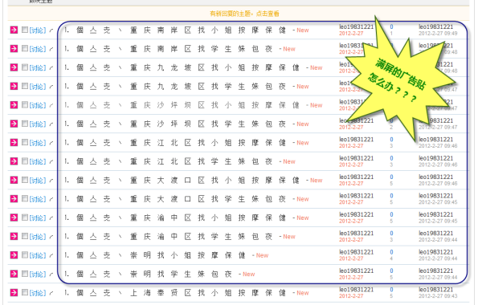
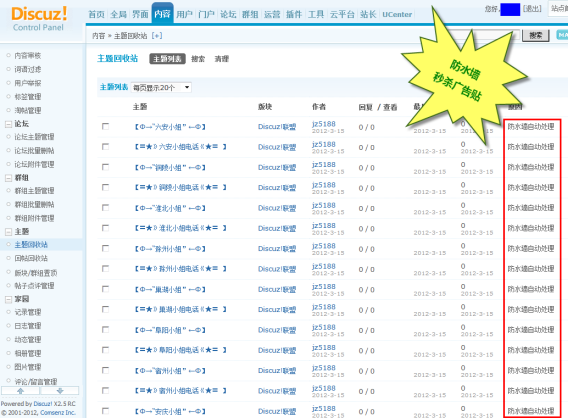

防水墙
防水墙由QQ安全中心和Discuz!联合出品，通过QQ安全中心对Discuz!的数据分析，实时过滤网站违规主题和违规回帖，违规信息自动进入回收站，无需站长手工删帖。
作为站长都会被以下几种情况困扰：漫天遍野的广告帖对网站造成极其恶劣的影响；彻底删除大量的广告帖相当耗时耗力；多种防灌水手段同时启用，丝毫不见成效；出现违规信息，网监给予压力，用户投诉不断等等。防水墙便是专门为解决站长此类困扰，下面我们来看防水墙是如何为社区保驾护航的：：
1、强大的违规信息对抗能力，通过对文本进行智能处理，从而提取内容特征指纹；并在丰富的数据经验的挖掘基础上，对灌水机等恶意行为的典型特征进行分析提取，确保大面积覆盖违规信息。
2、通过多种维度的模型结合，确保违规信息准确度，即保证极低的误杀。
3、建构于腾讯的海量服务器集群，拥有高效实时的处理能力，秒杀网站违规信息。
4、系统自我学习能力，利用站长的反馈，收集漏杀及误杀信息，快速形成数据知识的积累，从而进一步提高违规信息的覆盖率和准确率。
开通防水墙的好处：
1、保证网站绿色安全，大大提高用户对网站的满意度；
2、避免违规信息被网监监控，导致服务器或网站被迫停运；
3、减轻运营人员删帖压力。